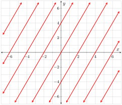
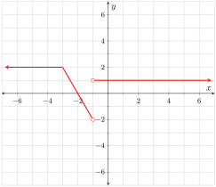
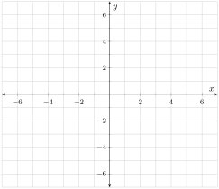
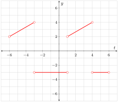
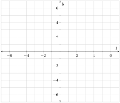
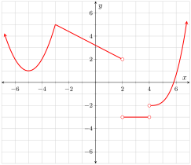

The derivative continuum can be expressed backwards as well as forwards. When you move from function to function in the reverse direction the resultant functions are called antiderivatives and the process is called antidifferentiation. These relationships are shown in Figures 4.5.1 and Figure 4.5.2.
There are (at least) two important differences between the differentiation chain and the antidifferentiation chain (besides their reversed order).
When you differentiate, the resultant function is unique. When you antidifferentiate, you do not get a unique function—you get a family of functions; specifically, you get a set of parallel curves.
We introduce a new function in the antidifferentiation chain. We say that \(F\) is an antiderivative of \(f\text{.}\) This is where we stop in that direction; we do not have a variable name for an antiderivative of \(F\text{.}\)
Since \(F\) is considered an antiderivative of \(f\text{,}\) it must be the case that \(f\) is the first derivative of \(F\text{.}\) Hence we can add \(F\) to our derivative chain resulting in Figure 4.5.3.
Each of the linear functions in Figure 4.5.4 has the same first derivative function.
Figure4.5.4.
1.
Draw this common first derivative function onto Figure 4.5.4 and label it \(g\text{.}\)
2.
Each of the given lines Figure 4.5.4 is called what in relation to \(g\text{?}\)
Exercise Group.
The function \(f\) is shown in Figure 4.5.5. Reference this function in the following questions.
Figure4.5.5.\(y=\fe{f}{x}\)
Figure4.5.6.
Figure4.5.7.
Figure4.5.8.
3.
At what values of \(x\) is \(f\) nondifferentiable?
4.
At what values of \(x\) are antiderivatives of \(f\) nondifferentiable?
5.
Draw onto Figure 4.5.6 the continuous antiderivative of \(f\) that passes through the point \(\point{-3}{1}\text{.}\) Note that every antiderivative of \(f\) increases exactly one unit over the interval \(\ointerval{-3}{-2}\text{.}\)
6.
Because \(f\) is not continuous, there are other antiderivatives of \(f\) that pass through the point \(\point{-3}{1}\text{.}\) Specifically, antiderivatives of \(f\) may or may not be continuous at \(-1\text{.}\) Draw onto Figures 4.5.7 and Figure 4.5.8 different antiderivatives of \(f\) that pass through the point \(\point{-3}{1}\text{.}\)
7.
Recall that a function, \(f\text{,}\) is periodic if there exists a constant, \(C\text{,}\) with the property that \(\fe{f}{x+C}=\fe{f}{x}\) for all values of \(x\) in the domain of \(f\text{.}\) The function \(y=\fe{\sin}{x}\) is an example of a periodic function. Specifically, the function has a period of \(2\pi\) because over any interval of length \(2\pi\) the behavior of the function is exactly the same as it was the previous interval of length \(2\pi\text{.}\) A little more precisely, \(\fe{\sin}{x+2\pi}=\fe{\sin}{x}\) regardless of the value of \(x\text{.}\)
Jasmine was thinking and told her lab assistant that derivatives and antiderivatives of periodic functions must also be periodic. Jasmine’s lab assistant told her that she was half right. Which half did Jasmine have correct—the part about the derivatives necessarily being periodic or the part about antiderivatives necessarily being periodic? Also, draw a function that illustrates that the other half of Jasmine’s statement is not correct.
8.
Consider the function \(g\) shown in Figure 4.5.9.
Figure4.5.9.\(y=\fe{g}{t}\)
Figure4.5.10.\(y=\fe{G}{t}\)
Let \(G\) be an antiderivative of \(g\text{.}\) Suppose that \(G\) is continuous on \(\cinterval{-6}{6}\text{,}\)\(\fe{G}{-6}=-3\text{,}\) and that the greatest value \(G\) ever achieves is \(6\text{.}\) Draw \(G\) onto Figure 4.5.10.
Exercise Group.
Answer the following questions in reference to a continuous function \(g\) whose first derivative is shown in Figure 4.5.11. You do not need to state how you made your determination; just state the interval(s) or values of \(x\) that satisfy the stated property. Note: the correct answer to one or more of these questions may be “There is no way of knowing.”
Figure4.5.11.\(y=\fe{\fd{g}}{x}\)
9.
Over what interval(s) is \(\sd{g}\) positive and increasing?
10.
At what value(s) of \(x\) is \(g\) nondifferentiable?
11.
Over what interval(s) is \(g\) never negative?
12.
At what value(s) of \(x\) is every antiderivative of \(g\) nondifferentiable?
13.
Over what interval(s) does \(\sd{g}\) have a constant value?
14.
Over what interval(s) is \(g\) linear?
15.
Over what interval(s) are antiderivatives of \(g\) linear?
16.
Over what interval(s) is \(\td{g}\) never negative?